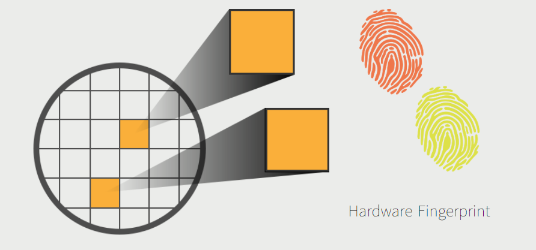
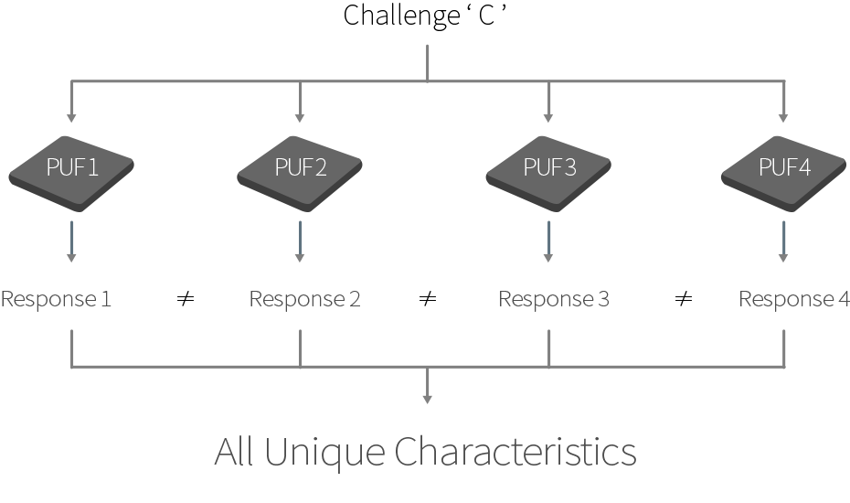

PUF (Physical Unclonable Function) is a physical property based on the molecular structure
variation of same materials. The variation causes sophisticated differences generated the
manufacturing process.
PUF is created through the chip manufacturing process.It utilizes its unavoidable and
uncontrollable variations at a molecular level, which creates each chip unique.
Why PUF?
PUF maintains its uniqueness throughout the manufacturing process.

The functionality of PUF is based on a challenge-response mechanism in which the mapping between
a challenge and the corresponding response is dependent on the complex and variable nature of a
physical material.

TPM or SE integration as applicable
>
• G3 Security Processor
G3 Key Features
PUF(Physical Unclonable Function)
Embedded Flash memory
Multiple Cryptographic algoritms
Interfaces
• PUF on G3 security processor
PUF supports key generation
The data stored in G3 is encrypted using a PUF key and it is decrypted when using the data.
The private key of ECC is generated by PUF and a key received from external site can be used.
When using AES and SM4 algorithms, a PUF key supports encryption and decryption.
• Cryptographic Algorithms
The G3 supports multiple cryptographic algorithms
Symmetric key algorithm: AES, DES and SM4
Asymmetric key algorithm:
ECC (ECDSA and ECDH) with secp256r1 (NIST P256)
ECC sm2p256 curve and SM2 signature algorithm
Hash algorithm: SHA256.
Physical Attack Defence
>
• Types of hardware attack
Invasive attack
Micro probing
Fault injection
Reverse engineering
Chip modification
FIB
Non-invasive attack
Side channel attack (Power analysis, DPA/SPA/CPA etc.)
Electro-magnetic analysis
Timing attack
Glitch attack
Data remanence in NVM
• Hardware attack prevention technology
Active shield on top of semiconductor wafer
Defence for various type of invasive attack
Probing attack to VIA PUF
PUF cells in a form of standard cell
Scattered thourghout the chip
Even when detected, PUF value cannot be read without cross-sectional view
Number of probing on one chip is limited (because approxmately the 4~5 probing on
semiconductor wafer excuted, then the wafer will be broken.)
Defence for DPA attack
Power consumption that does not change even with chages in cryptographic calcualtion